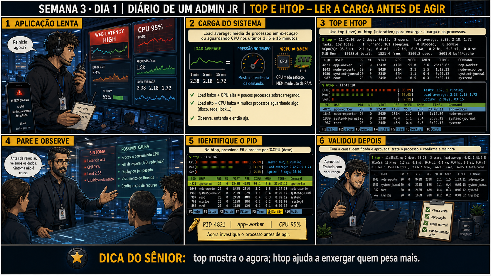

DIARIO DE UM ADMIN JR. | FASE 1 — LINUX, DO BÁSICO AO AVANÇADO
Antes de começar — 20 segundos de memória (Dia 5, Semana 2)
1. Na sexta-feira passada você só LEU rede e agendamento (ip a, crontab -l), sem mexer em nada. Por que o material insistiu nisso, mesmo sendo chato? 2. Hoje seu dedo vai querer digitar systemctl restart direto. O que a semana toda vem te ensinando sobre agir antes de observar?
1. Porque mexer em rede e agendamento sem entender o que já está configurado é o tipo de erro que derruba acesso remoto ou quebra um cron de produção — observar primeiro é o que evita isso. 2. A mesma disciplina de "observar antes" que valeu para rede e agendamento vale para performance: hoje, antes de reiniciar qualquer coisa, você vai abrir top/htop e descobrir QUEM está consumindo o quê. Reiniciar sem saber é a mesma pressa que a Semana 2 pediu pra você resistir.
🔗 Conecta com a Semana 2 inteira: você já sabe agir com aprovação, ajustar
permissão, buscar em escala e remover com segurança. Agora entra um novo hábito: antes de qualquer ação num
serviço lento, você precisa saber LER a carga do sistema — não adivinhar.
🔓 Privilégio de hoje: diagnosticar carga com top e htop antes de qualquer ação.
Você ganha autorização pra investigar processos em tempo real — ainda sem mexer em nada, só enxergando quem
está consumindo o quê.
Semana 3 · Dia 1 | Nível Júnior
top e htop: Ler a Carga Antes de Agir
reiniciar sem olhar quem está consumindo só adia o problema — nunca resolve
ANTES DE ALTERAR, OBSERVE. DEPOIS DE ALTERAR, VALIDE.

1. O chamado
#2741PRIORIDADE ALTA14:20aberto por: usuário final
"Está lentíssimo, quase travando. Preciso que resolvam AGORA."
Seu dedo já está digitando sudo systemctl restart app-service. O que você faz antes disso?
💡 Passa o mouse nas palavras destacadas pra ver uma dica rápida — clica se quiser a explicação completa com analogia.
2. O sênior te conta
🧑🏫 antes dos termos técnicos, a história de hoje
Hoje chegou um ticket de prioridade alta: "aplicação lenta". O dedo do Júnior já estava digitando
sudo systemctl restart app-service — o mesmo comando que ele aprendeu com aprovação na
Semana 2. Parei ele: "reiniciar sem saber a causa só adia o problema, não resolve. E dessa vez você nem
tem aprovação ainda, porque nem sabe o que vai pedir aprovação PRA fazer."
Mostrei o top: load average em 2,38 — alto, mas os três números (1, 5, 15 minutos) contam
uma história diferente de um número só. Expliquei: é como olhar o gráfico de febre de um paciente, não
só a temperatura agora. Depois fomos pro htop, ordenamos por %CPU com F6, e lá estava:
app-worker consumindo 95% de CPU sozinho.
O Júnior quase caiu no mesmo erro que muitos: viu %MEM baixo (2,6%) e achou que aquele processo "não
devia ser o problema". Expliquei que CPU e memória são medidas independentes — um processo pode suar
muito (CPU) sem carregar peso nenhum (memória). Foi com essa evidência específica, PID e tudo, que ele
finalmente pediu aprovação — não pra "reiniciar porque está lento", mas pra agir sobre um processo
identificado com nome e número.
3. Decodificador de conceitos
Clica em qualquer termo pra ver a definição completa e uma analogia do dia a dia:
4. Ferramentas e leitura da evidência
Comando
O que observar e por que importa
top
Visão leve e rápida da carga geral — load average, %CPU e %MEM por processo.
htop
Visão interativa e colorida — permite ordenar por coluna (F6) e ver por núcleo.
F6 no htop
Ordena a lista por uma coluna específica, como %CPU, pra achar o culpado rápido.
$ top - 11:42:03 up 2 days, load average: 2,38, 2,18, 1,72
PID USER PR NI VIRT RES %CPU %MEM TIME+ COMMAND
4821 appuser 20 0 1243m 412m 95,0 2,6 23:45.62 app-worker
$ htop (ordenado por %CPU, F6)
PID USER PRI NI VIRT RES %CPU %MEM TIME+ Command
4821 appuser 20 0 1243m 412m 95,1 2,6 23:47.11 app-worker
1643 appuser 20 0 842m 231m 3,2 1,5 1:12.33 node-exporter
5. Laboratório guiado — pegue na mão, comando por comando
Segurança: execute os testes apenas em VM descartável e confirme nomes de discos, hosts e arquivos antes de cada comando.
Ação: Leia o load average dos três períodos antes de fazer qualquer coisa.
top
Resultado esperado: três números identificados e anotados, mesmo que baixos.
Por que fizemos isso: top é a foto rápida da carga geral — o primeiro comando de qualquer ticket de "lento", antes de qualquer suposição sobre a causa.
Cilada comum: olhar só o número de 1 minuto e ignorar os outros dois — sem os três, você não sabe se a carga está subindo, estável ou já caindo.
Ação: Instale e abra o htop, se ainda não tiver.
sudo apt install htop
htop
Resultado esperado: interface interativa do htop carregada, com barras coloridas de CPU/memória.
Por que fizemos isso: htop dá visão por núcleo e ordenação interativa que o top não tem de forma tão prática — é a ferramenta certa quando você já sabe que precisa investigar mais fundo.
Cilada comum: instalar htop numa sessão de produção sem confirmar antes que instalar pacotes ali é permitido — em ambiente real, confirme a política do time primeiro.
Se o seu resultado foi diferente
"E: Unable to locate package htop" (não é Debian/Ubuntu) → use o gerenciador da sua distro: sudo dnf install htop (RHEL/Fedora) ou sudo yum install htop (CentOS antigo).
Ação: Ordene a lista por %CPU e identifique o processo no topo.
# dentro do htop, pressione F6 e selecione PERCENT_CPU
Resultado esperado: lista reordenada, processo de maior consumo no topo, PID visível.
Por que fizemos isso: ordenar por %CPU é o que transforma uma lista de dezenas de processos numa resposta direta: "quem é o culpado" aparece no topo, sem precisar ler linha por linha.
Cilada comum: ver %MEM baixo no processo do topo e descartar ele como "não é o problema" — como a história de hoje mostrou, CPU e memória são métricas independentes.
🧑🏫 Aqui entra o Mentor (em breve): se um processo desconhecido aparecer no topo da lista, este é o ponto onde o chat com o Sênior-IA vai ajudar a identificar o que ele é.
Ação: Gere uma carga de teste e observe o processo aparecer no topo do htop.
yes > /dev/null &
Resultado esperado: processo de teste visível consumindo %CPU alto, load average subindo em tempo real.
Por que fizemos isso: gerar a própria carga é a forma mais segura de ver o comportamento real do top/htop antes de precisar diagnosticar isso em produção sob pressão.
Cilada comum: esquecer o processo de teste rodando depois do laboratório — sempre encerre com kill no final, senão ele continua consumindo CPU sem necessidade.
Se o seu resultado foi diferente
rodou o comando duas vezes sem perceber e agora tem dois processos yes disputando CPU → confira com jobs antes de matar — pode precisar de kill %1 e kill %2, não só um.
Ação: Encerre o processo de teste e documente PID, %CPU, %MEM e load average antes/depois.
kill %1
top
Resultado esperado: registro completo reproduzindo o painel 6 da prancha de hoje.
Por que fizemos isso: comparar o "antes" e o "depois" com números concretos é a prova de que a ação realmente resolveu — sem essa comparação, "achei que melhorou" não é validação de verdade.
Cilada comum: encerrar o laboratório sem rodar o top de "depois" — sem essa segunda leitura, você não tem evidência formal de que a carga voltou ao normal.
Se o seu resultado foi diferente
"bash: kill: %1: no such job" → o job pode ter outro número se você rodou outros comandos em background antes. Rode jobs primeiro pra confirmar o número certo, ou use pkill yes para matar por nome.
6. Antes de ver as opções — tenta responder
🧠 Recall ativo: o que é
load average,
e por que os três números (1/5/15 min) importam mais do que só o primeiro?
Load average mostra a tendência da demanda, não uma foto única. O número de 1 minuto mostra o agora, o
de 15 mostra o passado recente — comparar os três revela se a carga está subindo, estável ou já caindo,
não só "está alta ou não".
QUESTÃO 1 de 3
7. Questão comentada — clica numa alternativa
O ticket diz "aplicação lenta". Qual é a sequência correta de ação?
💡 Analogia do Sênior para Fixar: O comando 'top' é como o painel de tráfego aéreo: mostra em tempo real quais processos estão consumindo mais combustível (CPU e RAM) no sistema.
QUESTÃO 2 de 3 — cenário de erro real
7.1 %CPU alto, %MEM baixo — o que isso realmente diz?
O processo app-worker (PID 4821) aparece com %CPU 95,1 mas %MEM
de apenas 2,6. Um colega sugere que "como a memória está baixa, não deve ser esse processo o
problema".
Essa leitura do colega está correta?
💡 Analogia do Sênior para Fixar: A métrica de Load Average no Linux é como a fila de carros na ponte: se você tem 4 pistas (núcleos) e o Load está em 8.0, significa que 4 carros estão passando e 4 estão esperando na fila.
QUESTÃO 3 de 3 — detalhe que confunde todo iniciante
7.2 "O 1 minuto já caiu, então o problema já passou, certo?"
Depois da correção, um novo top mostra load average: 0,42, 0,48, 0,55 — o
número de 1 minuto (0,42) já está baixo, mas os de 5 e 15 minutos ainda carregam parte do histórico.
Essa leitura de load average está correta: o problema já foi totalmente resolvido?
💡 Analogia do Sênior para Fixar: O comando 'htop' com cores e árvore de processos (F5) é como o organograma da empresa: mostra exatamente qual processo pai gerou quais subprocessos filhos.
8. Procedimento profissional
Rode top pra uma visão geral rápida da carga e do load average.
Abra htop e ordene por %CPU (F6) pra identificar o processo específico.
Anote PID, nome do processo, %CPU e %MEM antes de qualquer ação.
Peça aprovação com essa evidência em mãos, não com uma suposição.
Trate a causa com a ação aprovada, e valide com um novo top depois.
Prevenção — o que evita repetir esse tipo de problema
Configure alertas de monitoramento baseados em load average sustentado (não só um pico
isolado), pra chamar atenção antes que o ticket "aplicação lenta" chegue via reclamação de usuário. Documente
no runbook do serviço qual processo/PID é esperado consumir mais recurso normalmente, pra facilitar
reconhecer rápido quando algo foge do padrão.
9. Validação e encerramento
top e htop foram usados antes de qualquer ação de correção.
PID, %CPU e %MEM do processo responsável foram identificados e anotados.
Load average foi lido nos três períodos, não só no instante atual.
A ação de correção só foi tomada com aprovação e evidência em mãos.
Rollback e limites
Rollback aqui não se aplica a top/htop em si (são somente leitura) — o cuidado real
é não pular direto pra ação (restart, kill) sem antes ter a evidência que justifica aquela ação específica.
💡 Sobre repetição espaçada: "observe antes de agir" volta aqui aplicado a carga
de sistema, depois de já ter valido pra arquivos, permissões e serviços. O Anki vai conectar os quatro.
10. Resposta final
Alternativa correta: B. Nesta aula, a decisão correta foi rodar top ou
htop primeiro, identificar o processo responsável, e só então decidir a ação com essa evidência. O ponto
central do caso é este: top mostra o agora, htop ajuda a enxergar quem pesa mais — sempre antes de agir.
🔓 O que você desbloqueou hoje
Capacidade de diagnosticar carga de sistema com evidência real antes de qualquer
restart. Amanhã você aprende a ler o journal do systemd a fundo — log primeiro, restart depois, sempre.